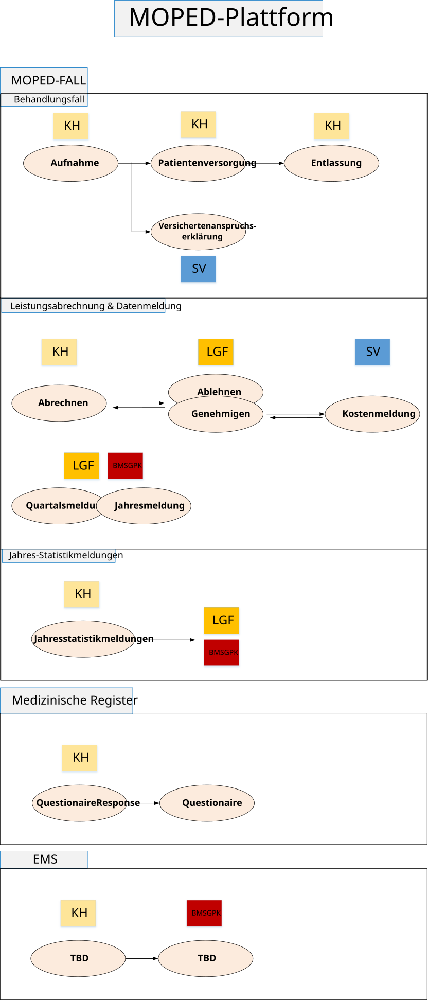
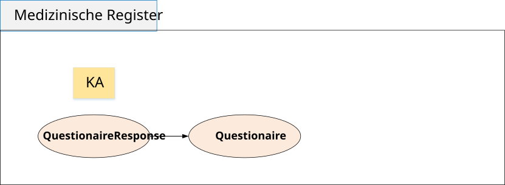

http://loinc.org
https://TBD.at/CodeSystem/LKFDiagnoseTypCS
https://elga.moped.at/CodeSystem/AbgangsartCS
https://elga.moped.at/CodeSystem/AbrechnungsRelevanzCS
https://elga.moped.at/CodeSystem/AltersgruppeCS
https://elga.moped.at/CodeSystem/AnwesenheitsartCS
https://elga.moped.at/CodeSystem/Aufnahmeart2CS
https://elga.moped.at/CodeSystem/AufnahmeartCS
https://elga.moped.at/CodeSystem/BehandlungsartCS
https://elga.moped.at/CodeSystem/ClaimSupportingInformationCategoryCS
https://elga.moped.at/CodeSystem/CompositionSectionsCS
https://elga.moped.at/CodeSystem/EntlassungsartCS
https://elga.moped.at/CodeSystem/FondsrelevanzCS
https://elga.moped.at/CodeSystem/LKFAbrechnungsKnotenCS
https://elga.moped.at/CodeSystem/LKFHauptdiagnosegruppenCS
https://elga.moped.at/CodeSystem/MopedClaimItemCategoryCS
https://elga.moped.at/CodeSystem/MopedClaimSubTypeCS
https://elga.moped.at/CodeSystem/MopedClaimTypeCS
https://elga.moped.at/CodeSystem/MopedDeviceTypesCS
https://elga.moped.at/CodeSystem/MopedEncounterParticipantTypesCS
https://elga.moped.at/CodeSystem/MopedEncounterTypesCS
https://elga.moped.at/CodeSystem/SonderklasseCS
https://elga.moped.at/CodeSystem/SpezielleOrganisationsformenCS
https://elga.moped.at/CodeSystem/UrsacheCS
https://elga.moped.at/CodeSystem/VAEStatusCS
https://elga.moped.at/CodeSystem/VerdachtArbeitsSchuelerunfallCS
https://elga.moped.at/CodeSystem/VerpflegskostenBeitragsbefreiungCS
https://elga.moped.at/CodeSystem/WorkflowStatusCS
https://elga.moped.at/ValueSet/LKFAbrechnungsGruppeVS
https://tbd.at/LKF
https://termgit.elga.gv.at/CodeSystem/elga-gtelvogdarollen
https://termgit.elga.gv.at/CodeSystem/icd-10-bmsgpk-2025
https://termgit.elga.gv.at/CodeSystem/iso-3166-1-alpha-3
https://termgit.elga.gv.at/CodeSystem/lkat-bmsgpk-2025
https://termgit.elga.gv.at/CodeSystem/lkf-diagnose-typ
https://termgit.elga.gv.at/ValueSet/lkf-diagnose-typ
This fragment is available on copyright.html
This publication includes IP covered under the following statements.
| Type | Reference | Content |
|---|---|---|
| web | termgit.elga.gv.at |
Description of identifier
Binding: https://termgit.elga.gv.at/ValueSet/hl7-at-patientidentifier ( extensible ) |
| web | termgit.elga.gv.at |
Description of identifier
Binding: https://termgit.elga.gv.at/ValueSet/hl7-at-patientidentifier ( required ) |
| web | svc.co.at |
Type of class such as 'group' or 'plan'
Binding: http://svc.co.at/CodeSystem/ecard-versichertenkategorie-cs ( required ) |
| web | snomed.info | 52870002 |
| web | snomed.info | 7771000 |
| web | snomed.info | 24028007 |
| web | elga.gv.at |
IG © 2024+ ELGA GmbH
. Package elga.moped#0.1.0 based on FHIR® 5.0.0
. Generated 2026-04-07
Links: Table of Contents | QA Report |
| web | elga.gv.at | Responsible: ELGA GmbH |
| web | termgit.elga.gv.at |
Unless not suitable, these codes SHALL be taken from https://termgit.elga.gv.at/ValueSet/hl7-at-organizationtype
( extensible to https://termgit.elga.gv.at/ValueSet/hl7-at-organizationtype
)
|
| web | termgit.elga.gv.at |
Kind of organization Binding: https://termgit.elga.gv.at/ValueSet/hl7-at-organizationtype ( extensible ) |
| web | termgit.elga.gv.at | https://termgit.elga.gv.at/ValueSet/hl7-at-organizationtype |
| web | termgit.elga.gv.at |
Unless not suitable, these codes SHALL be taken from
https://termgit.elga.gv.at/ValueSet/hl7-at-patientidentifier
http://hl7.org/fhir/ValueSet/identifier-type|5.0.0
( extensible to https://termgit.elga.gv.at/ValueSet/hl7-at-patientidentifier
)
|
| web | termgit.elga.gv.at |
The codes SHALL be taken from Unless not suitable, these codes SHALL be taken from
https://termgit.elga.gv.at/ValueSet/hl7-at-patientidentifier
http://hl7.org/fhir/ValueSet/identifier-type|5.0.0
( required to https://termgit.elga.gv.at/ValueSet/hl7-at-patientidentifier
)
|
| web | termgit.elga.gv.at |
Unless not suitable, these codes SHALL be taken from https://termgit.elga.gv.at/ValueSet/hl7-at-patientidentifier
( extensible to https://termgit.elga.gv.at/ValueSet/hl7-at-patientidentifier
)
|
| web | termgit.elga.gv.at |
The codes SHALL be taken from https://termgit.elga.gv.at/ValueSet/hl7-at-patientidentifier
( required to https://termgit.elga.gv.at/ValueSet/hl7-at-patientidentifier
)
|
| web | termgit.elga.gv.at | https://termgit.elga.gv.at/ValueSet/hl7-at-patientidentifier |
| web | termgit.elga.gv.at |
Unless not suitable, these codes SHALL be taken from For example codes, see
https://termgit.elga.gv.at/ValueSet/hl7-at-organizationtype
http://hl7.org/fhir/ValueSet/organization-type|5.0.0
( extensible to https://termgit.elga.gv.at/ValueSet/hl7-at-organizationtype
)
|
| web | termgit.elga.gv.at |
Kind of organization Binding: https://termgit.elga.gv.at/ValueSet/hl7-at-organizationtype ( extensible ) Required Pattern: At least the following |
| web | en.wikipedia.org | Both Bundle.link and Bundle.entry.link are defined to support providing additional context when Bundles are used (e.g. HATEOAS ). |
| web | svc.co.at |
The codes SHALL be taken from Unless not suitable, these codes SHALL be taken from
http://svc.co.at/CodeSystem/ecard-versichertenkategorie-cs
http://hl7.org/fhir/ValueSet/coverage-class|5.0.0
( required to http://svc.co.at/CodeSystem/ecard-versichertenkategorie-cs
)
|
| web | svc.co.at |
The codes SHALL be taken from http://svc.co.at/CodeSystem/ecard-versichertenkategorie-cs
( required to http://svc.co.at/CodeSystem/ecard-versichertenkategorie-cs
)
|
| web | svc.co.at | http://svc.co.at/CodeSystem/ecard-versichertenkategorie-cs |
| web | termgit.elga.gv.at |
Unless not suitable, these codes SHALL be taken from For codes, see
https://termgit.elga.gv.at/ValueSet/elga-laendercodes
( extensible to https://termgit.elga.gv.at/ValueSet/elga-laendercodes
)
|
| web | termgit.elga.gv.at |
Unless not suitable, these codes SHALL be taken from For codes, see
https://termgit.elga.gv.at/ValueSet/elga-religiousaffiliation
( extensible to https://termgit.elga.gv.at/ValueSet/elga-religiousaffiliation
)
|
| web | termgit.elga.gv.at |
Unless not suitable, these codes SHALL be taken from https://termgit.elga.gv.at/ValueSet/elga-laendercodes
( extensible to https://termgit.elga.gv.at/ValueSet/elga-laendercodes
)
|
| web | termgit.elga.gv.at |
Unless not suitable, these codes SHALL be taken from https://termgit.elga.gv.at/ValueSet/elga-religiousaffiliation
( extensible to https://termgit.elga.gv.at/ValueSet/elga-religiousaffiliation
)
|
| web | termgit.elga.gv.at |
Value of extension Binding: https://termgit.elga.gv.at/ValueSet/elga-laendercodes ( extensible ) |
| web | termgit.elga.gv.at |
Value of extension Binding: https://termgit.elga.gv.at/ValueSet/elga-religiousaffiliation ( extensible ) |
| web | termgit.elga.gv.at |
Administrative Gender Addition URL: http://hl7.at/fhir/HL7ATCoreProfiles/5.0.0/StructureDefinition/at-core-ext-gender-administrativeGenderAddition Binding: https://termgit.elga.gv.at/ValueSet/hl7-at-administrativegender-fhir-extension ( required ) |
| web | termgit.elga.gv.at | https://termgit.elga.gv.at/ValueSet/elga-laendercodes |
| web | termgit.elga.gv.at | https://termgit.elga.gv.at/ValueSet/elga-religiousaffiliation |
| web | snomed.info | 7771000 |
| web | snomed.info | 24028007 |
| web | hl7.at | HL7®, HEALTH LEVEL SEVEN® und FHIR® sind Marken im Besitz von Health Level Seven International, eingetragen beim United States Patent and Trademark Office. Die vollständigen Lizenzinformationen finden sich unter https://hl7.at/nutzungsbedingungen-und-lizenzinformationen/ . Die Lizenzbedingungen von HL7 International finden sich unter http://www.HL7.org/legal/ippolicy.cfm . |
| web | www.HL7.org | HL7®, HEALTH LEVEL SEVEN® und FHIR® sind Marken im Besitz von Health Level Seven International, eingetragen beim United States Patent and Trademark Office. Die vollständigen Lizenzinformationen finden sich unter https://hl7.at/nutzungsbedingungen-und-lizenzinformationen/ . Die Lizenzbedingungen von HL7 International finden sich unter http://www.HL7.org/legal/ippolicy.cfm . |
| web | fhir.hl7.at | Rückmeldungen zu Unklarheiten oder Verbesserungsvorschläge sind ausdrücklich erwünscht und unterstützen die Weiterentwicklung des Implementation Guides. Die Kontaktmöglichkeiten finden sich hier . |
| web | www.sozialministerium.gv.at | Siehe Definition des Bundesministeriums |
| web | www.sozialversicherung.at | Siehe Informationen des Dachverband der österreichischen Sozialversicherung |
| web | www.sozialversicherung.at | Diese Seite enthält das Mapping der Meldungen des Ka-Org Systems zu FHIR. Die Dokumentation der Ka-Org Meldungen ist unter diesem Link verfügbar. |
| web | www.sozialministerium.at | Diese Seite enthält das Mapping der Meldungen des MBDS Datensatzes (X01-X07, I11-I12, K01*) des LKF Systems zu FHIR. Die Dokumentation der LKF Meldungen ist unter diesem Link verfügbar. |
|
MOPED_EMS_Ueberblick.svg
|
|
MOPED_Fall_Ueberblick.svg
|
|
MOPED_Plattform_Ueberblick.svg  |
|
MOPED_med_Register_Ueberblick.svg  |
|
logo.png |
|
tree-filter.png
|